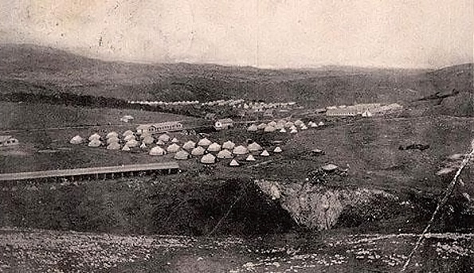

У средњевјековном периоду, на садашњем простору Калиновика биле су жупе Вишева и Загорје. Овим просторима је владао Стефан Вукшић Косача, доцније (од 1448. године) Херцег Стефан, који се прозвао „Херцегом од Светог Саве“, дајући својој титули и вјерски ауторитет. По њему је та област добила име Херцеговина. Загорје се, као средњовјековна жупа, први пут помиње око 1323. године у повељи бана Стефана II Котроманића, којом он дарује неке крајеве кнезу Вукославу. (Тунгуз, Краишник, 2006).
Турски извори, у почетку турске владавине, нахију Загор воде у ливи Херцеговина. Путописац Евлија Челебија пролазећи у XVII вијеку кроз Добро поље, Јелашца и Улог, пише да ова мјеста припадају Херцеговачком војводству.
Прије доласка римске врховне власти на овим просторима су живјели Илири. У непосредном додиру са римским елементом, у великој мјери, романизује се аутохтоно илирско становништво. Међутим, Илири су пренослили своју сточарску културу и на Романе, касније и на Словене, који су били претежно земљорадници. У данашње области Херцеговине Словени су долазили из Повисља. Мијешање Илира са Романима и послије са Словенима значајно је за простор Загорја. Из јужних крајева Херцеговине, племена су дотјеривала стоку на сезонску испашу, а живјела су у својим катунима на Зеленгори, Лелији, Црвању и Трескавици, као својим привременим или сталним стаништима. Смјена владара на овим просторима, условила је да становници ових простора буду активни устаници, како против турских, тако и против аустро-угарских властелина. Борбе против исламизације и католизације православних Словена у Средњем вијеку су биле вјековне тежње за ослобађањем о кматског робовања.
Испитани и нађани археолошки материјали са подручја Калиновика не илуструју довољно живот и културу преисторијских становника. Тек се, првим аустро-угарским пописом из 1879. године утврђују локације данашњих насеља на подручју општине Калиновик, који даје прву тачнију топографску, демографску и привредну слику овог простора.